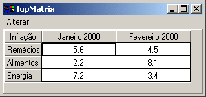

Creates a matrix of alphanumeric fields. Therefore, all values of the matrixs fields are strings. The matrix is not a grid container like many systems have. It inherits from IupCanvas.
This is an additional control that depends on the CD library. It is included in the Controls Library.
It has two modes of operation: normal and callback mode. In normal mode string values are stored in attributes for each cell. In callback mode these attributes are ignored and the cells are filled with strings returned by the "VALUE_CB" callback. So the existance of this callback defines the mode the matrix will operate.
Ihandle* IupMatrix(char *action_cb); [in C]
iup.matrix{} -> (elem: ihandle) [in Lua]
matrix(action_cb) [in LED]
action_cb: Name of the action generated when the user types something.
Returns the identifier of the created matrix, or NULL if an error occurs.
ACTION_CB -
Action generated when a keyboard event
occurs.
CLICK_CB -
Action generated when any mouse button is
pressed over a cell.
RELEASE_CB -
Action generated when any mouse button is
released over a cell.
MOUSEMOVE_CB -
Action generated to notify the application
that the mouse has moved over the matrix.
ENTERITEM_CB -
Action generated when a matrix cell is
selected, becoming the current cell.
LEAVEITEM_CB -
Action generated when a cell is no longer
the current cell.
SCROLLTOP_CB -
Action generated when the matrix is scrolled
with the scrollbars or with the keyboard.
BGCOLOR_CB -
Action generated to retrieve the background
color of a cell when it needs to be redrawn.
FGCOLOR_CB -
Action generated to retrieve the foreground
color of a cell when it needs to be redrawn.
DRAW_CB -
Action generated before the cell is drawn.
Allow a custom cell draw.
DROPCHECK_CB -
Action generated to determine if a dropdown
feedback should be shown.
DROP_CB -
Action generated to determine if a text
field or a dropdown will be shown.
DROPSELECT_CB -
Action generated when an element in the
dropdown list is selected.
EDITION_CB -
Action generated when the current cell
enters or leaves the edition mode.
VALUE_CB -
Action generated to verify the value of a
cell.
VALUE_EDIT_CB -
Action generated to notify the application
that the value of a cell was edited.
MARK_CB -
Action generated to verify the selection
state of a cell.
MARKEDIT_CB -
Action generated to notify the application
that the selection state of a cell was changed.
elem:setcell(lin, col: number, value: string)
Modifies the text of a cell.
elem:getcell(lin, col: number) -> (cell: string)
Returns the text of a cell.
These functions can be used to help set and get attributes from the matrix:
void IupMatSetAttribute(Ihandle*h, const char* a, int l, int c, char* v); void IupMatStoreAttribute(Ihandle* ih, const char* a, int l, int c, char* v); char* IupMatGetAttribute(Ihandle* ih, const char* a, int l, int c); int IupMatGetInt(Ihandle* ih, const char* a, int l, int c); float IupMatGetFloat(Ihandle* ih, const char* a, int l, int c); void IupMatSetfAttribute(Ihandle* ih, const char* a, int l, int c, const char* f, ...);
They work just like the respective tradicional set and get functions. But the attribute string is complemented with the L and C values. For ex:
IupMatSetAttribute(ih, "" , 30, 10, v) = IupSetAttribute(n, "30:10", v)
IupMatSetAttribute(ih, "BGCOLOR" , 30, 10, v) = IupSetAttribute(n, "BGCOLOR30:10", v)
IupMatSetAttribute(ih, "ALIGNMENT" , 10, 0, v) = IupSetAttribute(n, "ALIGNMENT10:0", v) (*)
(*) noticed that in this case the second value will be ignored.
These functions are not available in Lua, since you can simply write:
elem["bgcolor"..l..":"..c] = v or elem["bgcolor30:10"] = v
A matrix might have titles for lines and columns. This must be defined before the matrix is mapped, and cannot be changed afterwards. A matrix will have a line of titles if, before mapped, an attribute of the L:0 type is defined. It will have a column of titles if, before mapped, an attribute of the 0:C type is defined.
If the width of the column of titles is not defined (WIDTH0), then its size is given by the size of the largest title defined when the matrix is mapped. CHECK THIS.
Titles (for lines or columns) can be generated with more that one text line. For such, the title value must contain a \n. The matrix does not by itself change the lines height to fit titles with multiple lines. The user must change the lines size manually, by using attribute HEIGHTn. In IUPs size definition, a line with height 8 will fit one text line, a line with height 16 will fit two text lines, and so on.
When allowed the width of a column can be changed holding and dragging its title right border, see RESIZEMATRIX.
Very large matrices must use the callback mode to set the values, and not the regular value attributes of the cells. The idea is the following:
1 -
Register the VALUE_CB callback
2 -
No longer set the value of the cells. They
will be set one by one by the callback. Note that the values of the cells must now be stored by the user.
3 -
If the matrix is editable, set the VALUE_EDIT_CB callback.
4 -
When the matrix must be invalidated, use the REDRAW attribute to force a matrix redraw.
A negative aspect is that, when VALUE_CB is defined, the matrix never verifies attributes of type %d:%d. Therefore, it also does not verify line and column titles (which must be given by the callback). The result is that, at the moment the matrix is created, it resorts solely to the existence of attributes WIDTH0 and HEIGHT0 to find out if it will have line or column titles. That is, for such matrices to have titles, the WIDTH0 and HEIGHT0 attributes must be defined. This problem is not serious, because with IUPs definition of SIZE, HEIGHT0=8 will always produce a column title in the size desired.
Another important reminder: if VALUE_CB is defined and VALUE_EDIT_CB is not, it is absolutely necessary that the application does not allow the user to edit any cell. This must be done by returning IUP_IGNORE in the IUP_EDITION_CB callback. (In the future, this will be done inside the matrix.)
Keyboard navigating through the matrix cells outside the edition mode is done by using the following keys:
Inside the edition mode, the following keys are used for a text field:
When the matrix is outside the edition mode, pressing any character key makes the current key to enter in the edition mode, the old text is replaced by the new one being typed. If Enter or Space is pressed, the current cell enters the edition mode with the current text of the cell. If Del is pressed, the whole contents of the cell will be deleted. Double-clicking a cell also enters the edition mode. In Motif, when start editing using a double click, the user must click again to the edit control get the focus.
When the matrix is in the edition mode, to confirm the entered value, press Enter. By pressing Esc, the previous value is restored. The cell will also leave the edition mode if the user clicked in another cell or in another control, then the value will be confirmed. When pressing Enter to confirm the value the focus goes to the cell bellow the current cell, if at the last line then the focus goes to the cell on the left. The value confirmation depends on the EDITION_CB callback return code.
When mark mode is active the cells can be marked using mouse, if the keyboard is used all marks are cleared.
A marked cell will have its background attenuated to indicate that it is marked.
Cells can be selected individually or the marks can be restricted to lines and/or columns. Also multiple cells can be marked simultaneously in continuous or in segmented areas. Lines and columns are marked only when the user clicks in their respective titles. Continuous areas are marked holding and dragging the mouse or holding the Shift key. Segmented areas are marked holding the Ctrl key.
Creates a simple matrix with the values and layout shown in the image below. There is also a menu that allows making some changes to the matrix.
